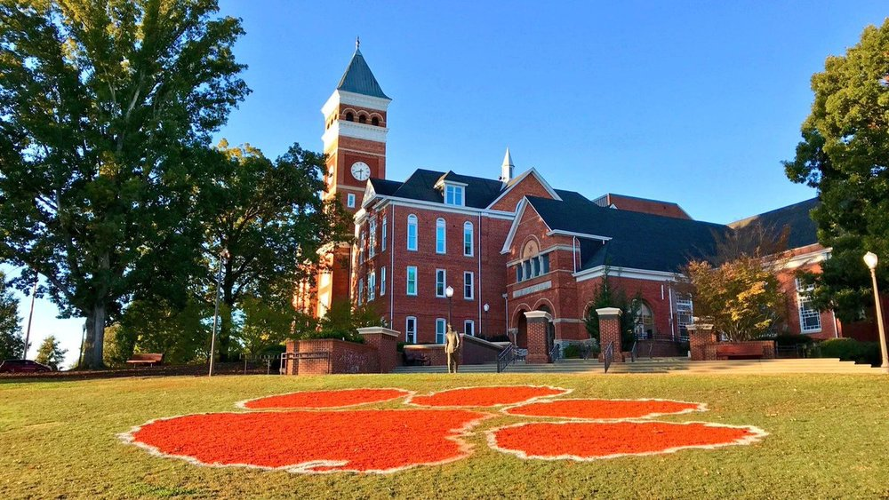

Shirong Zhao
Ph.D. Candidate in Economics at Clemson University,
Department of Economics
424 Sirrine Hall
Clemson University
Clemson,
South Carolina 29634
USA
Email: shironz@clemson.edu
Phone: +1 864 624 3200

|
Shirong Zhao
Department of Economics
Email: shironz@clemson.edu |
|
I am a Ph. D. job market candidate in Economics at Clemson University, with rigorous training in quantitative analysis and economic modeling.
My research interests include non-parametric efficiency estimation, financial economics, Industry Organization, Machine Learning, and Bayesian analysis.
I am on the job market in 2019-2020 and will be available for interviews at the ASSA meetings in San Diego.
|
Click on these items to find:
|
 |